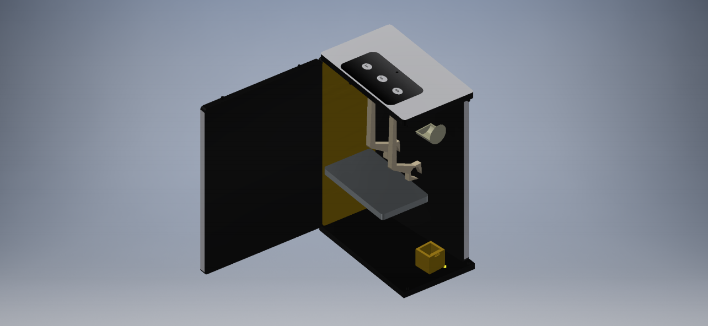

SIAM is a revolutionary invention in the laundry world.
SIAM is an alternative to sorting and ironing socks manually. It makes
doing the laundry easy. No more tireless days ironing
shirts. No more long hours sorting socks. SIAM takes the stress out of
rushing to do the laundry. By a push of a button, you can either tell SIAM
to sort the socks, iron the shirt, or do both at the same time.
There are claws that sort the socks. You throw a pile of socks into the
box and the claws recognize the size and color of them and sorts them
accordingly. There is also a dewrinkle system in the machine that sprays
the shirts which gets out most of the wrinkles.
SIAM was invented by a team of high schoolers for their Entrepreneurship
Project. They all had a common problem in their life which was their
frustration with sorting their laundry and ironing their clothes.
FoldiMate and
Effie inspired them
to create their own product to solve their problem. SIAM is currently the
only product in the world that sorts clothes. It is not available to the
public yet, but when it is launched, the projected retail price is $399.99.